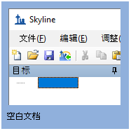
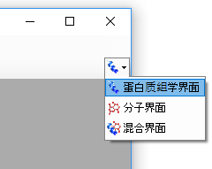
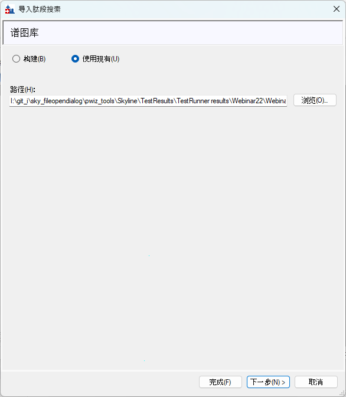
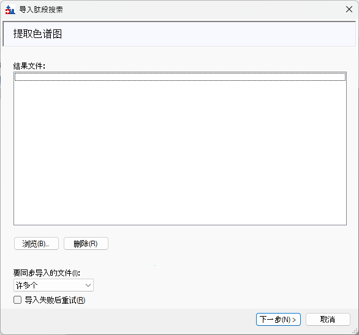

通过靶向三重四极杆（SRM）分析来选择要监测的肽段和碎片可能颇具挑战性，需要耗费大量时间和成本。MacCoss 实验室此前的工作表明，数据非依赖采集（DIA）数据能够更好地预测肽段在 靶向三重四极杆分析中的表现。DIA 方法以更全面的方式对蛋白质组进行采样，而我们从这些实验中获得的信息 – 碎片离子强度、保留时间以及批次间重现性 – 对靶标选择很有帮助。
在本教程中，您将完成一套基于 DIA 结果来评估和选择适用于 SRM 分析的肽段的工作流程。具体而言，您将涉及以下概念：
注意：使用 EncyclopeDIA 搜索气相分级样品的步骤记录在 Pino 等人 2020 年的 MCP 论文中。三个气相分级样品被分别搜索并保存为单独的色谱图文库，然后使用 EncyclopeDIA 2.13.30 及更高版本中提供的 “Combine multiple libraries” 功能合并为单个文库。
要开始本教程，请下载以下 ZIP 文件：
https://skyline.ms/webinars/Webinar22.zip
https://skyline.ms/webinars/Webinar22_dia_libA.zip
https://skyline.ms/webinars/Webinar22_dia_libB.zip
https://skyline.ms/webinars/Webinar22_dia_libC.zip
请注意，DIA 文库文件非常大（每个约 3 GB），因为它们包含用于构建色谱图文库的气相分级 DIA 运行数据。请将这些文件解压到计算机上的某个文件夹，例如：
C:\Users\brendanx\Documents
这将创建一个新文件夹：
C:\Users\brendanx\Documents\Webinar22
如果您在开始本教程之前一直在使用 Skyline，建议将 Skyline 恢复为默认设置。要执行此操作：

现在，您当前 Skyline 实例中的设置已重置为默认值。
由于本教程涉及蛋白质组学主题，请确保用户界面设置为 “蛋白质组学界面”。单击 Skyline 工具栏右上角的用户界面按钮，并选择如下所示的蛋白质组学界面：

Skyline 正在以蛋白质组学模式运行，这由 Skyline 右上角的蛋白质图标显示。
本节的目标是导入 GPF DIA 搜索和峰边界数据。您将向 Skyline 提供实验的结果和背景信息，包括要提取哪些肽段和离子对的参数。这还可以进一步调整以适应提供肽段保留时间和评分 信息的其他 DIA 搜索输出。
使用文件 > 起始页返回起始页，然后单击导入 DIA 肽段搜索。
系统将提示您在导入前保存文件。保存为 DIA_to_SRM_Tutorial.sky。

单击下一步。
由于气相分级使得每个重复包含多次进样，因此此时您将跳过添加结果文件。单击下一步继续。将弹出一个窗口询问您是否确定要继续；单击是。

本教程在肽段搜索步骤中未包含任何修饰，因此只需单击下一步继续。
对于此数据集，您将使用以下选项提取产物离子：

单击下一步。
其中一些选项可能与您在常规 DIA 分析中使用的略有不同；例如，限制为第 3 个离子 – 这是靶向三重四极杆分析（此处的最终目标）中常用的经验法则。
您将只从结果中提取 MS/MS。请选择以下选项：

单击下一步。
对于此数据集，选择酶 Trypsin [KR | P]，并将最大遗漏切割数设置为 0。单击浏览并导航至 uniprot_human_25apr2019.fasta 文件。

单击完成。将弹出一个窗口显示 FASTA 处理的进度。
将出现一个用于关联蛋白质的新弹出窗口。使用以下选项：
您会注意到，当为如何处理蛋白质和肽段选择不同的选项时，底部蛋白质关联结果表中的数字会发生变化。“Mapped” = 在文库中检测到肽段，“Unmapped” = 在 FASTA 中但没有肽段映射到它们，“Targets” = 在蛋白质分组并通过上述标准之后，“Shared peptides” = 存在于 FASTA 中的多个蛋白质条目中。

单击确定。
现在，您的 Skyline 文档的靶标视图应已填充了文库中检测到的蛋白质、肽段、母离子和碎片，在本例中来自 EncyclopeDIA 结果。一些靶标会根据所选参数被进一步过滤掉 – 例如 0 个遗漏切割。

为了安排 SRM 分析，您需要一个索引化保留时间标准品，例如 PRTC。此 DIA 实验的样品中包含了 PRTC，因此现在您需要将它们添加到文档中，因为它们未包含在肽段搜索/文库中。请在 导入结果和提取色谱图之前执行此操作，以确保它们被提取。有几种方法可以做到这一点，但为了节省时间，您可以从现有文档中复制并粘贴它们。如果基于序列或 FASTA 添加它们， 则需要手动注释重标记残基。

保存文档。
现在环境已全部设置好，您可以为从文库中填充的所有肽段导入和提取色谱图了。由于气相分级使用 6 次单独进样，因此您将把结果作为多进样重复导入。

导入可能需要几分钟。保存文档。
现在您拥有了所有与文档设置匹配的 DIA 结果。接下来，您将查看这些结果，以仅筛选出可重现的肽段。
此方法的强大之处在于，您可以确信这些靶蛋白的肽段将在您自己的样品中被测量到，因为您已经在自己的 DIA 实验中观察到了它们。此外，您可以根据通过 DIA 测量获得的先验知识来 指导您对肽段的选择。具体而言，您拥有碎片离子强度和重现性信息 – 以针对 3 次重复进样计算的变异系数百分比（%CV）来衡量。此信息可帮助您为每个蛋白质选择最有可能 在 SRM 分析中表现良好的肽段。
对于肽段优化，您将从一些全局优化开始。这会留下一份肽段列表，作为一组已知可重现的肽段，将来您可以根据需要为许多不同的蛋白质重新使用它。此筛选也可以针对特定蛋白质进行， 如步骤 3 所示。首先按肽段 %CV 筛选，然后按肽段强度排名筛选（筛选也可以按相反的顺序进行）。%CV 筛选可去除不良检测并捕捉较差的色谱或重现性；随后肽段强度筛选会为 每个蛋白质挑选出最优中的最优，并为每个肽段挑选碎片强度排名。可以放宽筛选参数，或保留/重新添加具有生物学意义的特定肽段。一个重要的注意事项是，此方法只能用于在 DIA 实验中检测到的蛋白质。
如果存在重复，Skyline 会自动为每个肽段计算 %CV。此信息可在文档网格的可选列中找到。首先，了解此文档中总体 %CV 分布的概况。
导航至视图 > 峰面积 > CV 直方图。

默认视图会在 20% CV 处显示红色虚线。您可以通过单击属性并将 CV 截止值调整为 30，将其调整为显示 30%。

作为一般截止标准，对您希望纳入适用于靶向分析的候选肽段数据库中的肽段，施加以下规则：每个蛋白质必须有 2 个肽段，并且肽段在三次重复中必须低于 30% CV。
导航至优化 > 高级。将出现一个具有多个优化选项的新弹出窗口。在文档选项卡中选择以下选项：

在一致性选项卡中选择以下选项：

单击确定。使用文件 > 另存为保存筛选后的文档，例如 DIA_to_SRM_Tutorial-filtered.sky。
现在，您已筛选掉重现性较差的肽段和蛋白质。具体而言，您可以在 Skyline 文档的右下角看到，有 967 个蛋白质具有 2 个以上肽段、至少 3 个离子对且 %CV < 30%（7,122 个肽段）。
对于此示例，假设您对 CSF 中的 67 个蛋白质子集感兴趣，这些蛋白质在某项关注的研究中先前被描述为差异丰度。现在，您可以仅专注于从这些蛋白质中选择肽段。
在此步骤中，您将仅在文档中保留出现在您列表中的蛋白质。

单击确定。将出现一个新的弹出窗口，列出列表中不在文档内的蛋白质。单击确定继续。

现在，您拥有一个仅包含与列表中蛋白质匹配的肽段的文档。此外，这些都是仅具有良好重现性的肽段，这是由 %CV 筛选所保证的。根据靶蛋白的数量或项目的目标，此时可以对肽段和 离子对进行额外筛选。在本例中，您将仅把肽段靶标限制为每个蛋白质两个，并将离子对限制为每个肽段 5 个。这为了教程的目的省去了一些手动评估，但对于较小的分析，强烈建议进行 额外的手动评估和文献检索。
导航至优化 > 高级。在结果选项卡中设置以下选项：
在其他情况下，您可能想要做出其他选择，例如仅最大母离子峰或删除缺少结果的节点，但在此处它们不会改变文档。

单击确定。导航至编辑 > 全部展开 > 蛋白质。

将文件另存为 SRM_targets.sky。
现在，您应该拥有一个包含 60 个蛋白质（每个 2 个肽段）和 13 个 PRTC 肽段的文档。您将把它用作 SRM 分析的列表。为每个肽段保留 5 个离子对的原因是，确保在初轮 SRM 分析 测试后有一些余地来调整列表。
有两种策略可以利用在 DIA 实验中测量的保留时间。一种简单的方法是将其用作文库，以确认在非定时 SRM 分析中正确选取了峰。另一种方法是使用 DIA 运行中包含的 iRT 标准品 直接安排 SRM 运行。这需要在您希望运行 SRM 分析的 HPLC 和仪器上对仅含 iRT 的样品进行几次运行。在本例中是 Easy nLC 和 Thermo Altis 三重四极杆。有关 iRT 的更多 信息，请参阅 Skyline 网站上的 “iRT 保留时间预测” 教程或同名的网络研讨会 #7。在此示例中，您将根据 DIA 结果构建一个计算器，然后将其用于以更短梯度的 SRM 方法进行安排。
导航至视图 > 保留时间 > 回归 > 分数对运行。


为您的 iRT 计算器命名（例如 CSF_targets），然后单击创建。在弹出窗口创建 iRT 数据库中，为 iRT 计算器文件命名。将计算器保存到本教程文件夹， 并使用与之前相同的名称：CSF_targets。完成后单击保存。
在编辑 iRT 计算器窗口中，从 iRT 标准品的下拉列表中选择 Pierce (iRT-C18)：

您刚刚设置了 iRT 值。请记住，iRT 值是无量纲的；它们与洗脱顺序相关，此处范围为 -27.60 到 100。

在肽段设置 – 预测选项卡中，应选中保留时间预测器选项 CSF_targets。单击下拉列表并选择<编辑当前项>。将时间窗口调整为 5 分钟，然后单击确定。再次单击确定。
如果出现添加标准肽段窗口，请单击否。（这似乎是一个将在未来修复的错误。）
右键单击回归图，选择计算器 > CSF_targets。您的回归现在应已更新。

请注意，有一个肽段 GSGVGEQDGGLIGAEEK 无法校准，因为它的 m/z 801.9 落入了没有 iRT 肽段的气相分级 800–900 中。（这也是一个将在未来修复的错误。）目前，请右键 单击图表并选择删除离群值。如果您查看色谱图，可以看到每个肽段现已预测的保留时间两侧各有一段浅黄色区域。
在此步骤中，您将在新的梯度、HPLC 和色谱柱设置上采集并导入非定时的、仅含 iRT 标准品的数据文件。

转到设置 > 离子对设置。在预测选项卡中使用以下设置：
在全扫描选项卡中使用以下设置：

单击确定。

文件导入后，回归图应会根据新数据进行调整。仅测量了 iRT 标准品，但现在 Skyline 可以根据所有其他肽段存储的 iRT 分数预测它们的保留时间，您可以通过图表 x 轴上的紫色 点看到这一点。
导航至视图 > 保留时间 > 安排。

您始终希望为您的仪器和色谱选择适当数量的并发离子对。目标是在考虑峰宽和仪器驻留时间的情况下，平衡峰上的采点数。您可以在 Skyline 中检查窗口宽度对并发离子对数量的影响。

转到文件 > 导出 > 离子对列表。

选择好并发离子对数量后，单击确定。在弹出的安排对话框中，选择使用保留时间平均值，然后单击确定。为您的离子对列表命名并单击保存。 注意：如果要写入多个方法，则 Skyline 会自动在文件名末尾追加从 0001 开始的编号。
使用文件 > 打开所在文件夹导航到您刚刚保存离子对列表的位置。

有多个离子对列表 – 每个样品进样对应一个。请注意，即使有多个方法，每个方法都包含 iRT 标准品碎片。您的新离子对列表现已准备就绪，可用于在 Xcalibur 中创建新的 仪器方法。
恭喜！您已为新的分析获得了一份定时离子对列表。